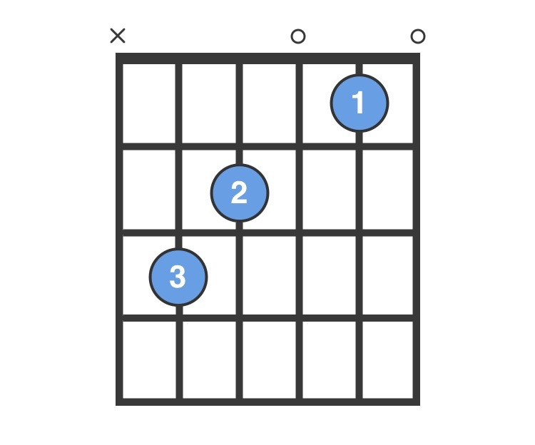
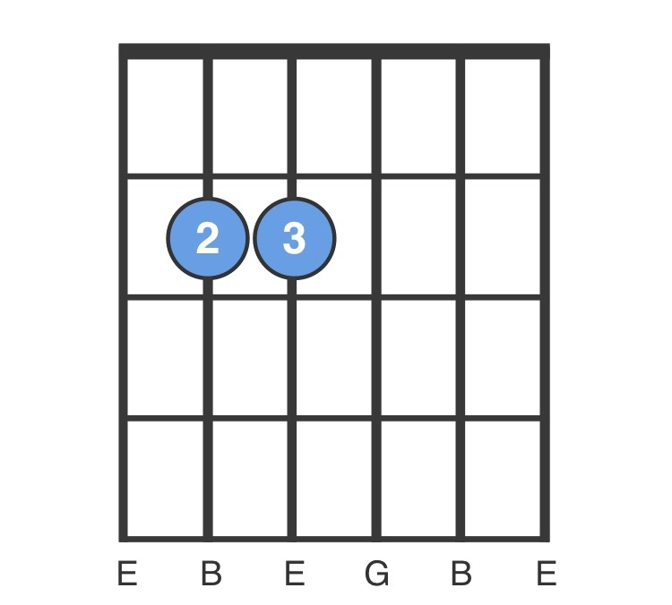

Daniel Johnston - True Love Will Find You In The End
[Verse 1]
G
True love will find you in the end
C G
You'll find out just who was your friend
e a
Don’t be sad, I know you will,
C
But don’t give up until
C G
True love will find you in the end.
[Verse 2]
G
This is a promise with a catch
C G
Only if you're looking can it find you
G
‘Cause true love is searching too
C
But how can it recognize you
G
Unless you step out into the light, the light?
e a
Don’t be sad, I know you will,
C
But don’t give up until
C G
True love will find you in the end.